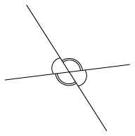
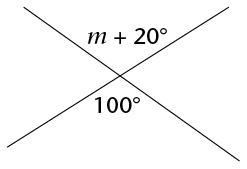
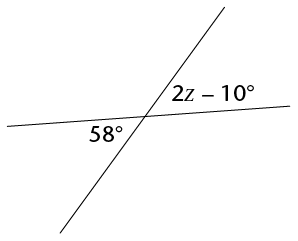
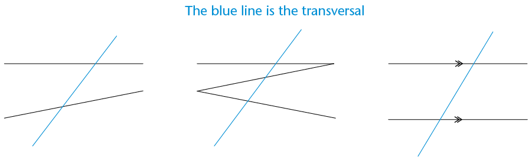
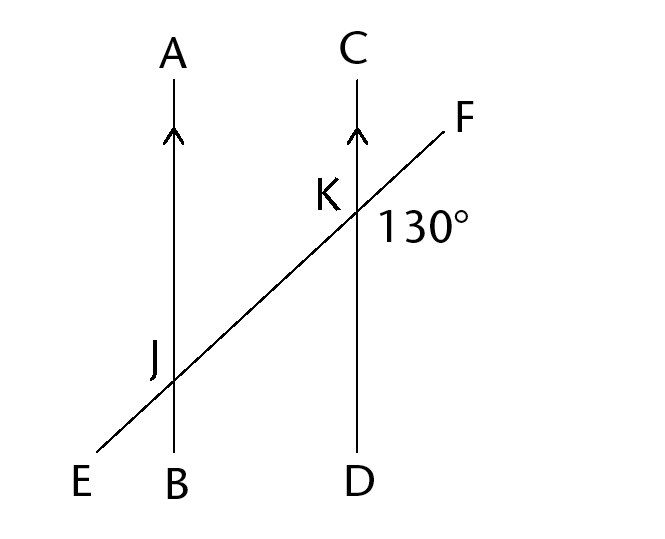
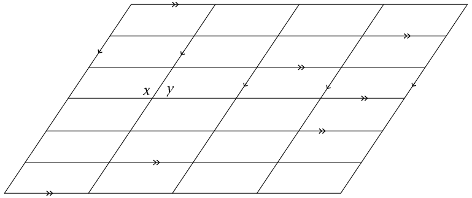
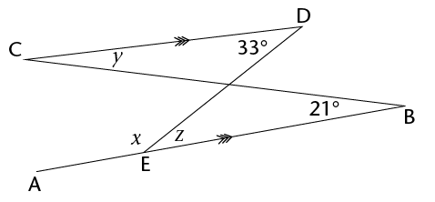
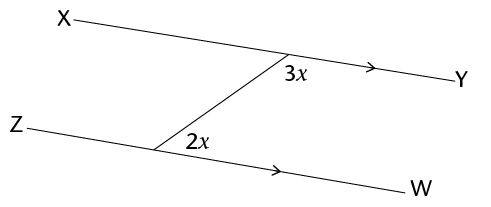
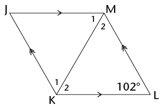
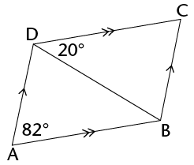

<div class="container">
  <div id="contents" class="col-md-12 main-content"><h1 xmlns="http://www.w3.org/1999/xhtml" id="toc-id-26">Geometry of straight lines</h1>
    
    <p xmlns="http://www.w3.org/1999/xhtml" class="Body-opener-no-indent">In this chapter, you will
    explore the relationships between pairs of angles that are
    created when straight lines intersect (meet or cross). You will
    examine the pairs of angles that are formed by perpendicular
    lines, by any two intersecting lines, and by a third line that
    cuts two parallel lines. You will come to understand what is
    meant by vertically opposite angles, corresponding angles,
    alternate angles and co-interior angles. You will be able to
    identify different angle pairs, and then use your knowledge to
    help you work out unknown angles in geometric figures.</p>

    <h2 xmlns="http://www.w3.org/1999/xhtml" id="toc-id-27">Angles on a straight line</h2>

    <h3 xmlns="http://www.w3.org/1999/xhtml" class="Head-investigation-after-B-head">Sum of angles on a straight line</h3>

    <p xmlns="http://www.w3.org/1999/xhtml" class="Body-no-indent">In the figures below, each angle is
    given a label from 1 to 5.</p>
    <ol xmlns="http://www.w3.org/1999/xhtml"><li class="Body-investigation-hanging"> Use a protractor to
    measure the sizes of all the angles in each figure. Write your
    answers on each figure.

    <p class="caption">A</p>

    <div class="frame-14"></div>

    <p class="caption">B</p>

    <div class="frame-14"></div>
  </li>
  
    <li class="Body-investigation"> Use your answers to fill in
    the angle sizes below.
      <ol><li class="ques-a--2-space-below para-style-override-7">\( \hat{1} + \hat{2} = \text{______}^{\circ} \)
    <hr/></li>
    <li class="ques-a--2-space-below para-style-override-7">\( \hat{3} + \hat{4} + \hat{5}= \text{______}^{\circ} \)
    <hr/></li>
</ol></li>
</ol><div xmlns="http://www.w3.org/1999/xhtml" class="note">
      
          <div class="frame-14"></div>

      <p class="Body-content-no-indent">The sum of angles that are
      formed on a straight line is equal to 180°. (We
      can shorten this property as: \(\angle\)s on a
      straight line.)</p>
       
      <p> Two angles whose sizes add up to 180° are also
	called <b>supplementary</b> angles, for example \( \hat{1} + \hat{2}\).</p>

	      <p> Angles that share a vertex and a common side are
		said to be <b>adjacent</b>. So \( \hat{1} + \hat{2}\) are therefore also
		  called <b>supplementary adjacent angles</b>.</p>
	
    </div>
      
        <div xmlns="http://www.w3.org/1999/xhtml" class="note">
      <p class="Body-content-no-indent">When two lines are
      perpendicular, their adjacent supplementary angles are each
      equal to 90°.</p>
      
      <p>In the drawing below, DC A and DC B are
adjacent supplementary angles because they are
next to each other (adjacent) and they add up to
180° (supplementary).</p>

    <div class="frame-14"></div>
    </div>
    
    <h3 xmlns="http://www.w3.org/1999/xhtml" class="Head-investigation">Finding unknown angles on straight lines</h3>

    <p xmlns="http://www.w3.org/1999/xhtml" class="Body-no-indent">Work out the sizes of the unknown
    angles below. Build an equation each time as you solve these
    geometric problems. Always give a reason for every statement
    you make.</p>

 <ol xmlns="http://www.w3.org/1999/xhtml"><li class="Body-investigation"> Calculate the size of \(a\).

            <p class="Body-investigation"><span></span> </p>

            <p class="Body-investigation"> \( \begin{align} a + 63^{\circ}
            &amp;= \text{______} [\angle\text{s on a straight line}] \\ a &amp;= \text{______} - 63^{\circ} \\  &amp;=  \text{______} \end{align}\)</p>
            <hr/></li>
	   
            <li class="Body-investigation"> Calculate the size of
            \(x\).

            <p class="Body-investigation"><span></span> </p>
	    <hr/></li>
	  
            <li class="Body-investigation"> Calculate the size of
            \(y\).

            <p class="Body-investigation"><span></span> </p>
	    <hr/></li>
	</ol>
	<h3 xmlns="http://www.w3.org/1999/xhtml" class="Head-investigation">Finding more unknown angles on straight lines</h3>

 <ol xmlns="http://www.w3.org/1999/xhtml"><li class="Body-investigation"> Calculate the size
            of:
            <p class="ques-a--2-space-below para-style-override-7">
            <span></span> </p>
	    
	    <ol><li> \(x\)
		<hr/></li>
	      <li> \(\hat{ECB}\)
		<hr/></li>
          </ol>
	</li>
	<li class="Body-investigation"> Calculate the size
            of:

            <p class="ques-a--2-space-below para-style-override-7">
            <span></span> </p>
         	    <ol><li> \(m\)
		<hr/></li>
	      <li> \(\hat{SQR}\)
		<hr/></li>
          
	</ol></li>
            <li class="Body-investigation"> Calculate the size
            of:
	    
	                <p class="ques-a--2-space-below para-style-override-7">
            <span></span> </p>
         	    <ol><li> \(x\)
		<hr/></li>
	      <li> \(\hat{HEF}\)
		<hr/></li>
          
	</ol></li>
      
            <li class="Body-investigation"> Calculate the size
            of:
            <p class="ques-a--2-space-below"><span></span> </p>
	    
         	    <ol><li> \(k\)
		<hr/></li>
	      <li> \(\hat{TYP}\)
		<hr/></li>
          
	</ol></li>

            <li class="Body-investigation"> Calculate the size
            of:

            <p class="ques-a--2-space-below para-style-override-45">
            <span></span> </p>
         	    <ol><li> \(p\)
		<hr/></li>
	      <li> \(\hat{JKR}\)
		<hr/></li>
          
	</ol></li></ol>
    
            
    <h2 xmlns="http://www.w3.org/1999/xhtml" id="toc-id-28">Vertically opposite angles</h2>

    <h3 xmlns="http://www.w3.org/1999/xhtml" class="Head-investigation-after-B-head">What are vertically opposite angles?</h3>

 <ol xmlns="http://www.w3.org/1999/xhtml"><li class="Body-investigation-hanging"> Use a protractor to
    measure the sizes of all the angles in the figure. Write your
    answers on the figure.    <p> </p></li>
    


    <li class="Body-investigation para-style-override-7"> Notice
    which angles are equal and how these equal angles are
    formed.</li>
  </ol><div xmlns="http://www.w3.org/1999/xhtml" class="note">
      <p class="Body-content-no-indent"><b>Vertically opposite
      angles</b> (<b>vert. opp.</b> \(\angle\)<b>s</b>)
      are the angles opposite each other when two lines
      intersect.</p>
      
      <p>Vertically opposite angles are <b>always equal</b>.</p>
      
          <p class="Body-no-indent"><span></span> </p>
    </div>


    <h3 xmlns="http://www.w3.org/1999/xhtml" class="Head-investigation">Finding unknown angles</h3>

    <p xmlns="http://www.w3.org/1999/xhtml" class="Body-no-indent">Calculate the sizes of the unknown
    angles in the following figures. Always give a reason for every
    statement you make.</p>
    
    <ol xmlns="http://www.w3.org/1999/xhtml"><li class="Body-investigation"> Calculate \(x,~
            y\) and \(z\).

            <p class="Body-investigation"><span></span> </p>
          
	    <p> \( \begin{align} x &amp;= \text{______}^{\circ} &amp;&amp;[\text{vert. opp.}\angle\text{s}] \\  \\ y + 105^{\circ} &amp;= \text{______}^{\circ} &amp;&amp;[\angle\text{s on a straight line}]
	      \\ y &amp;= \text{______} - 105^{\circ} &amp;&amp; \\  &amp; = \text{______} \\ \\ z &amp;= \text{______} &amp;&amp;[\text{vert. opp.}\angle\text{s}] \end{align}\)</p>
	    <hr/></li>
	    
            <li class="Body-investigation"> Calculate \(j,~
            k\) and \(l\).

            <p class="Body-investigation"><span></span> </p>
	 <hr/></li>
	  
            <li class="Body-investigation"> Calculate \(a,~
            b,~ c\) and \(d\).

            <p class="Body-investigation"><span></span> </p>
	    <hr/></li>
	  </ol><h3 xmlns="http://www.w3.org/1999/xhtml" class="Head-investigation">Equations using vertically opposite angles</h3>

    <p xmlns="http://www.w3.org/1999/xhtml" class="Body-no-indent">Vertically opposite angles are always
    equal. We can use this property to build an equation. Then we
    solve the equation to find the value of the unknown
    variable.</p>

 <ol xmlns="http://www.w3.org/1999/xhtml"><li class="Body-investigation"> Calculate the value of
            \(m\).

            <p class="Body-investigation para-style-override-35">
            <span></span> </p>

           \( \begin{align} m + 20^{\circ} &amp;=  100^{\circ} [\text{vert. opp.}\angle\text{s}] \\ m &amp;= 100^{\circ} - 20^{\circ} \\ &amp;= \text{______} \end{align}\)
           <hr/></li>
	 
            <li class="Body-investigation"> Calculate the value of
            \(t\).

            <p class="Body-investigation para-style-override-35">
            <span></span> </p>
            <hr/></li>
       
            <li class="Body-investigation"> Calculate the value of
            \(p\).

            <p class="Body-investigation para-style-override-35">
            <span></span> </p>
            <hr/></li>

            <li class="Body-investigation"> Calculate the value of
            \(z\).

            <p class="Body-investigation para-style-override-35">
            <span></span> </p>
            <hr/></li>

           <li class="Body-investigation"> Calculate the value of
            \(y\).

            <p class="Body-investigation para-style-override-35">
            <span></span> </p>
            <hr/></li>
	  
            <li class="Body-investigation"> Calculate the value of
            \(r\).

            <p class="Body-investigation para-style-override-35">
            <span></span> </p>
                     <hr/></li>
	</ol><h2 xmlns="http://www.w3.org/1999/xhtml" id="toc-id-29">Lines intersected by a transversal</h2>

    <h3 xmlns="http://www.w3.org/1999/xhtml" class="Head-investigation-after-B-head">Pairs of angles formed by a transversal</h3>

    <p xmlns="http://www.w3.org/1999/xhtml" class="Body-no-indent">A <b>transversal</b> is a line that
    crosses at least two other lines.</p>

    <p xmlns="http://www.w3.org/1999/xhtml" class="Body-no-indent"><span></span> </p>

    <p xmlns="http://www.w3.org/1999/xhtml" class="Body-no-indent">When a transversal intersects two
    lines, we can compare the sets of angles on the two lines by
    looking at their positions.</p>

    <p xmlns="http://www.w3.org/1999/xhtml" class="Body-no-indent">The angles that lie on the same side
    of the transversal and are in matching positions are called
    <b>corresponding angles</b> (<b>corr.</b>\(\angle\)<b>s</b>). In
    the figure, these are corresponding angles:</p>

    <div xmlns="http://www.w3.org/1999/xhtml" class="frame-14"></div>

    <ul xmlns="http://www.w3.org/1999/xhtml"><li class="Body-bullet">\(a\)
      and \(e\)</li>

      <li class="Body-bullet">\(b\)
      and \(f\)</li>

      <li class="Body-bullet">\( d\)
      and \(h\)</li>

      <li class="Body-bullet para-style-override-7">\(c\) and \(g\).</li>
    </ul><ol xmlns="http://www.w3.org/1999/xhtml"><li class="Body-investigation-hanging"> In the figure,
    \(a\) and \(e\) are both left of the transversal and
    above a line.

    <p class="Body-investigation-spaced para-style-override-11">
    Write down the location of the following corresponding angles.
    The first one is done for you.</p>

    <p class="ques-a--2-space-below">\(b\) and \(f\): Right of the transversal and above lines</p>
    <hr/><p class="ques-a--2-space-below">\(d\) and \(h\): </p>
    <hr/><p class="ques-a--2-space-below">\(c\) and \(g\): </p>
    <hr/></li>
</ol><p xmlns="http://www.w3.org/1999/xhtml" class="Body-no-indent"><b>Alternate angles</b>
    (<b>alt.</b>\(\angle\)<b>s</b>) lie
    on opposite sides of the transversal, but are not adjacent or
    vertically opposite. When the alternate angles lie between the
    two lines, they are called <b>alternate interior angles</b>. In
    the figure, these are alternate interior angles:</p>

    <div xmlns="http://www.w3.org/1999/xhtml" class="frame-14"></div>

    <ul xmlns="http://www.w3.org/1999/xhtml"><li class="Body-bullet">\(d\)
      and \(f\)</li>

      <li class="Body-bullet">\(c\)
      and \(e\)</li>
    </ul><p xmlns="http://www.w3.org/1999/xhtml" class="Body-no-indent">When the alternate angles lie outside
    of the two lines, they are called <b>alternate exterior
    angles</b>. In the figure, these are alternate exterior
    angles:</p>

    <ul xmlns="http://www.w3.org/1999/xhtml"><li class="Body-bullet">\(a\)
      and \(g\)</li>

      <li class="Body-bullet">\(b\)
      and \(h\)</li>
    </ul><ol xmlns="http://www.w3.org/1999/xhtml"><li value="2" class="Body-investigation-spaced para-style-override-11">
    Write down the location of the following alternate angles:

    <p class="ques-a-">\(d\) and \(f\):</p>
    <hr/><p class="ques-a-">\(c\) and \(e\):</p>
    <hr/><p class="ques-a-">\(a\) and \(g\):</p>
    <hr/><p class="ques-a-">\(b\) and \(h\):</p>
    <hr/></li>
</ol><p xmlns="http://www.w3.org/1999/xhtml" class="Body-no-indent"><b>Co-interior angles</b>
    <span class="char-style-override-14">(</span><b>co-int.</b>\(\angle\)<b>s</b><span class="char-style-override-14">)</span>
    lie on the same side of the transversal and between the two
    lines. In the figure, these are co-interior angles:</p>

    <div xmlns="http://www.w3.org/1999/xhtml" class="frame-14"></div>

    <ul xmlns="http://www.w3.org/1999/xhtml"><li class="Body-bullet">\(c\)
      and \(f\)</li>

      <li class="Body-bullet">\(d\)
      and \(e\)</li>
    </ul><ol xmlns="http://www.w3.org/1999/xhtml"><li value="3" class="Body-investigation-hanging para-style-override-11">
    Write down the location of the following co-interior
    angles:

    <p class="ques-a-">\(d\) and \(e\):</p>
    <hr/><p class="ques-a-">\(c\) and \(f\):</p>
    <hr/></li>
</ol><h3 xmlns="http://www.w3.org/1999/xhtml" class="Head-investigation">Identifying types of angles</h3>

    <p xmlns="http://www.w3.org/1999/xhtml" class="Body-no-indent">Two lines are intersected by a
    transversal as shown below.</p>

    <p xmlns="http://www.w3.org/1999/xhtml" class="Body-no-indent"><span></span> </p>

    <p xmlns="http://www.w3.org/1999/xhtml" class="Body-no-indent">Write down the following pairs of
    angles:</p>
    <ol xmlns="http://www.w3.org/1999/xhtml"><li class="ques-a--2-space-below"> two pairs of corresponding
    angles:
    <hr/></li>
    <li class="ques-a--2-space-below"> two pairs of alternate
    interior angles:
    <hr/></li>
    <li class="ques-a--2-space-below"> two pairs of alternate
    exterior angles:
    <hr/></li>
    <li class="ques-a--2-space-below"> two pairs of co-interior
    angles:
    <hr/></li>
    <li class="ques-a--2-space-below"> two pairs of vertically
    opposite angles:
    <hr/></li>
</ol><h2 xmlns="http://www.w3.org/1999/xhtml" id="toc-id-30">Parallel lines intersected by a transversal</h2>

    <h3 xmlns="http://www.w3.org/1999/xhtml" class="Head-investigation-after-B-head">Investigating angle sizes</h3>

    <p xmlns="http://www.w3.org/1999/xhtml" class="Body-no-indent">In the figure below left, EF is a
    transversal to AB and CD. In the figure below right, PQ is a
    transversal to parallel lines JK and LM.</p>

    <p xmlns="http://www.w3.org/1999/xhtml" class="Body-no-indent"><span></span> </p>

 <ol xmlns="http://www.w3.org/1999/xhtml"><li class="Body-investigation-hanging"> Use a protractor to
    measure the sizes of all the angles in each figure. Write the
    measurements on the figures.</li>

    <li class="Body-investigation"> Use your measurements to
    complete the following table.

    <table id="table-61" class="No-Table-Style"><tbody><tr class="Row-Column-6"><td>
            <p class="Table-header-left">Angles</p>
          </td>

          <td>
            <p class="Table-header-centred">When two lines are not
            parallel</p>
          </td>

          <td>
            <p class="Table-header-centred">When two lines are
            parallel</p>
          </td>
        </tr><tr class="Row-Column-246"><td class="cell-style-override-13">
            <p class="Table-text-left" xml:lang="en-GB">Corr.\(\angle\)s</p>
          </td>

          <td class="cell-style-override-14">
            <p class="Table-text-centred para-style-override-13">
           \( \hat{1} = \text{_______};~\hat{5} = \text{_______}\)</p>

            <p class="Table-text-centred para-style-override-13">
           \( \hat{4} = \text{_______};~\hat{8} = \text{_______}\)</p>

            <p class="Table-text-centred para-style-override-13">
           \( \hat{2} = \text{_______};~\hat{4} = \text{_______}\)</p>
	   
            <p class="Table-text-centred para-style-override-13">
            \( \hat{3} = \text{_______};~\hat{7} = \text{_______}\)</p>

          </td>

                   <td class="cell-style-override-14">
            <p class="Table-text-centred para-style-override-13">
           \( \hat{9} = \text{_______};~\hat{13} = \text{_______}\)</p>

            <p class="Table-text-centred para-style-override-13">
           \( \hat{12} = \text{_______};~\hat{16} = \text{_______}\)</p>

            <p class="Table-text-centred para-style-override-13">
           \( \hat{10} = \text{_______};~\hat{14} = \text{_______}\)</p>
	   
            <p class="Table-text-centred para-style-override-13">
            \( \hat{11} = \text{_______};~\hat{15} = \text{_______}\)</p>

          </td>
        </tr><tr class="Row-Column-398"><td class="cell-style-override-13">
            <p class="Table-text-left" xml:lang="en-GB">Alt.int.\(\angle\)s</p>
          </td>
	  
 <td class="cell-style-override-14">
            <p class="Table-text-centred para-style-override-13">
           \( \hat{4} = \text{_______};~\hat{6} = \text{_______}\)</p>

            <p class="Table-text-centred para-style-override-13">
           \( \hat{3} = \text{_______};~\hat{5} = \text{_______}\)</p>
         </td>

     <td class="cell-style-override-14">
            <p class="Table-text-centred para-style-override-13">
           \( \hat{12} = \text{_______};~\hat{14} = \text{_______}\)</p>

            <p class="Table-text-centred para-style-override-13">
           \( \hat{11} = \text{_______};~\hat{13} = \text{_______}\)</p>
         </td>
        </tr><tr class="Row-Column-398"><td class="cell-style-override-13">
            <p class="Table-text-left" xml:lang="en-GB">Alt.ext.\(\angle\)s</p>
          </td>
	  
 <td class="cell-style-override-14">
            <p class="Table-text-centred para-style-override-13">
           \( \hat{1} = \text{_______};~\hat{7} = \text{_______}\)</p>

            <p class="Table-text-centred para-style-override-13">
           \( \hat{2} = \text{_______};~\hat{8} = \text{_______}\)</p>
         </td>

     <td class="cell-style-override-14">
            <p class="Table-text-centred para-style-override-13">
           \( \hat{9} = \text{_______};~\hat{15} = \text{_______}\)</p>

            <p class="Table-text-centred para-style-override-13">
           \( \hat{10} = \text{_______};~\hat{16} = \text{_______}\)</p>
         </td>
        </tr><tr class="Row-Column-398"><td class="cell-style-override-13">
            <p class="Table-text-left" xml:lang="en-GB">Co-int.\(\angle\)s</p>
          </td>

<td class="cell-style-override-14">
            <p class="Table-text-centred para-style-override-13">
           \( \hat{4} + \hat{5} = \text{_______}\)</p>

            <p class="Table-text-centred para-style-override-13">
          \( \hat{3} + \hat{6} = \text{_______}\)</p>
         </td>

<td class="cell-style-override-14">
            <p class="Table-text-centred para-style-override-13">
           \( \hat{12} + \hat{13} = \text{_______}\)</p>

            <p class="Table-text-centred para-style-override-13">
          \( \hat{11} + \hat{14} = \text{_______}\)</p>
         </td>
        </tr></tbody></table></li>
    <li class="Body-investigation-hanging"> Look at your completed
    table in question 2. What do you notice about the angles formed
    when a transversal intersects parallel lines?
    <hr/></li>
</ol><div xmlns="http://www.w3.org/1999/xhtml" class="note">
      <p class="Body-content-no-indent">When lines are
      parallel:</p>
      <ul><li> corresponding angles are equal</li>
<li>	 alternate interior angles are equal</li>
<li>	 alternate exterior angles are equal</li>
  <li>	 co-interior angles add up to 180°</li>
</ul></div>

    <h3 xmlns="http://www.w3.org/1999/xhtml" class="Head-investigation">Identifying angles on parallel lines</h3>

 <ol xmlns="http://www.w3.org/1999/xhtml"><li class="Body-investigation"> Fill in the corresponding
    angles to those given.
  
    <p class="Body-investigation para-style-override-32">
    <span></span> </p>
  </li>
  
    <li class="Body-investigation"> Fill in the alternate exterior
    angles.

    <p class="Body-investigation para-style-override-32">
    <span></span> </p>
  </li>
  
    <li class="ques-a-">
      <ol><li> Fill in the alternate interior
    angles.</li>

    <li class="ques-a-"> Circle the two pairs of co-interior
    angles in each figure.</li>
  </ol><p class="Body-investigation para-style-override-46">
    <span></span></p>
</li>

    <li class="ques-a-">
      <ol><li> Without measuring, fill in all the
    angles in the following figures that are equal to \(x\) and
    \(y\).</li>

    <li class="ques-a-"> Explain your reasons for each \(x\)
    and \(y\) that you filled in to your partner.
      <hr/></li>
  </ol><div class="frame-14"></div>
    </li>
    <li class="Body-investigation"> Give the value of \(x\) and
    \(y\) below.

      <div class="frame-14"></div>
      <hr/></li>
</ol><h2 xmlns="http://www.w3.org/1999/xhtml" id="toc-id-31">Finding unknown angles on parallel lines</h2>

    <h3 xmlns="http://www.w3.org/1999/xhtml" class="Head-investigation-after-B-head">Working out unknown angles</h3>

    <p xmlns="http://www.w3.org/1999/xhtml" class="Body-no-indent">Work out the sizes of the unknown
    angles. Give reasons for your answers. (The first one has been
    done as an example.)</p>
    
    <ol xmlns="http://www.w3.org/1999/xhtml"><li class="Body-investigation"> Find the sizes of
            \(x,~y\) and \(z\).

            <p class="Body-investigation para-style-override-32">
            <span></span> </p>

            	    <p> \( \begin{align} x &amp;= 74^{\circ} &amp;&amp;[\text{alt.}\angle\text{ with given }74^{\circ}; AB \parallel CD] \\ \\ y &amp;= 74^{\circ} &amp;&amp;[\text{corr.}\angle\text{ with }x; AB \parallel CD]
	      \\ \text{or } y &amp;= 74^{\circ} &amp;&amp;[\text{vert. opp.}\angle\text{ with given }74^{\circ}] \\ \\ z &amp;= 106^{\circ} &amp;&amp;[\text{co-int.}\angle\text{ with }x; AB \parallel CD] \\ 
	       \text{or } z  &amp;= 106^{\circ} &amp;&amp;[\angle\text{s on a straight line}] \end{align}\)</p>
	     </li>
	     
            <li class="Body-investigation"> Work out the sizes of
            \(p,~ q\) and \(r\).

            <p class="Body-investigation para-style-override-32">
            <span></span> </p>
	    <hr/></li>
	  
            <li class="Body-investigation"> Find the sizes of
            \(a,~b,~c\) and \(d\).

            <p class="Body-investigation para-style-override-32">
            <span></span> </p>
	    <hr/></li>
	  
            <li class="Body-investigation-hanging"> Find the sizes
            of all the angles in this figure.

            <p class="Body-investigation para-style-override-32">
            <span></span> </p>
	    <hr/></li>
 
            <li class="Body-investigation-hanging"> Find the sizes
            of all the angles. (Can you see two transversals and
            two sets of parallel lines?)

            <p class="Body-investigation-hanging"><span></span> </p>
	    <hr/></li>
	</ol><h3 xmlns="http://www.w3.org/1999/xhtml" class="Head-extension--no-rule-">Extension</h3>
         <div xmlns="http://www.w3.org/1999/xhtml" class="extension"> 
            <p class="Body-box-no-indent">Two angles in the
            following diagram are given as \(x\) and \(y\).
            Fill in all the angles that are equal to \(x\) and \(y\).</p>

            <p class="Body-box-no-indent"><span></span> </p>
        </div>


    <h3 xmlns="http://www.w3.org/1999/xhtml" class="Head-investigation">Sum of the angles in a quadrilateral</h3>

    <p xmlns="http://www.w3.org/1999/xhtml" class="Body-investigation">The diagram below is a section of
    the previous diagram.</p>

    <p xmlns="http://www.w3.org/1999/xhtml" class="Body-investigation"><span></span> </p>

 <ol xmlns="http://www.w3.org/1999/xhtml"><li class="Body-investigation"> What kind of quadrilateral is
    in the diagram? Give a reason for your answer.
    <hr/></li>
  
    <li class="Body-investigation-spaced para-style-override-11">
    Look at the top left intersection. Complete the following
    equation:

    <p class="Body-investigation-spaced">Angles around a point\( =
    360^{\circ}\)</p>

    <p class="Body-investigation">\(\therefore x + y+ \text{______} + \text{______} = 360^{\circ}\)
  </p></li>
  
    <li class="Body-investigation-hanging para-style-override-11">
    Look at the interior angles of the quadrilateral. Complete the
    following equations:

    <p class="Body-investigation-spaced">Sum of angles in the
    quadrilateral \(= x + y + + \text{______} + \text{______}\)</p>
    
    <p class="Body-investigation-spaced">From question 2: \(x + y+ \text{______} + \text{______} = 360^{\circ}\)


    </p><p class="Body-investigation-spaced"> \(\therefore\) Sum of angles in
    a quadrilateral = \(\text{______}^{\circ}\)</p>
    <hr/><div class="aside">
      <p class="Body-box-no-indent">Can you think of another way to
      use the diagram above to work out the sum of the angles in a
      quadrilateral?</p>
    </div>
    
  </li>
</ol><h2 xmlns="http://www.w3.org/1999/xhtml" id="toc-id-32">Solving more geometric problems</h2>

    <h3 xmlns="http://www.w3.org/1999/xhtml" class="Head-investigation-after-B-head">Angle relationships on parallel lines</h3>

 <ol xmlns="http://www.w3.org/1999/xhtml"><li class="Body-investigation"> Calculate the sizes of \(\hat{1}\) to \(\hat{7}\).

            <p class="Body-investigation para-style-override-32">
            <span></span> </p>
	    <hr/></li>
	  
            <li class="Body-investigation"> Calculate the sizes of
            \(x,~y\) and \(z\).

            <p class="Body-investigation para-style-override-36">
            <span></span> </p>
	    <hr/></li>
	  
            <li class="Body-investigation"> Calculate the sizes of
            \(a, ~b, ~c\) and \(d\).

            <p class="Body-investigation"><span></span> </p>
	    <hr/></li>
	  
            <li class="Body-investigation"> Calculate the size of
            \(x\).

            <p class="Body-investigation para-style-override-32">
            <span></span> </p>
          	    <hr/></li>
	  
            <li class="Body-investigation"> Calculate the size of
            \(x\).

            <p class="Body-investigation para-style-override-32">
            <span></span> </p>
              <hr/></li>
	  
            <li class="Body-investigation">
            Calculate the size of \(x\).

            <p class="Body-investigation para-style-override-32">
            <span></span> </p>
          	    <hr/></li>
	  
            <li class="Body-investigation"> Calculate the sizes of
            \(a\) and \(\hat{CEP}\).

            <p class="Body-investigation para-style-override-32">
            <span></span> </p>
                  	    <hr/></li>
	</ol><h3 xmlns="http://www.w3.org/1999/xhtml" class="Head-investigation">Including properties of triangles and quadrilaterals</h3>

 <ol xmlns="http://www.w3.org/1999/xhtml"><li class="Body-investigation"> Calculate the sizes of \(\hat{1}\) to \(\hat{6}\).

            <p class="Body-investigation para-style-override-32">
            <span></span> </p>
	    <hr/></li>

          
            <li class="Body-investigation"> RSTU is a trapezium.
            Calculate the sizes of \(\hat{T}\) and \(\hat{R}\).

            <p class="Body-investigation para-style-override-32">
            <span></span> </p>
          </li>
        
            <li class="Body-investigation"> JKLM is a rhombus.
            Calculate the sizes of \(\hat{JML}, \hat{M_2}\) and \(\hat{K_1}\).

            <p class="Body-investigation para-style-override-32">
            <span></span> </p>
          </li>
  
            <li class="Body-investigation"> ABCD is a
            parallelogram. Calculate the sizes of \(\hat{ADB}, \hat{ABD}, \hat{C}\)  and \(\hat{DBC}\)

            <p class="Body-investigation para-style-override-32">
            <span></span> </p>
          </li>
	</ol><div xmlns="http://www.w3.org/1999/xhtml" class="worksheet">
	  <ol><li class="worksheet-text"> Look at the drawing below. Name
    the items listed alongside.
        
            <p class="worksheet-text"><span></span> </p>
         
	    <ol><li class="worksheet-text"> a pair of vertically
            opposite angles
            <hr/></li>
            <li class="worksheet-text"> a pair of corresponding
            angles
            <hr/></li>
            <li class="worksheet-text"> a pair of alternate
            interior angles
            <hr/></li>
            <li class="worksheet-text"> a pair of co-interior
            angles
            <hr/></li>
	  </ol></li>


    <li class="worksheet-text"> In the diagram, AB \(\parallel\) CD. Calculate the sizes of \(\hat{FHG}, \hat{F}, \hat{C}\)  and \(\hat{D}\). Give reasons for your answers.

    <p class="worksheet-text para-style-override-35">
    <span></span> </p>
    <hr/></li>
  
    <li class="worksheet-text"> In the diagram, OK = ON,
    KN \(\parallel\) LM,
    KL\(\parallel\) MN and \(\hat{LKO} = 160^{\circ}\).

    <p class="worksheet-text">Calculate the value of \(x\). Give reasons for your
    answers.</p>

    <p class="worksheet-text para-style-override-35">
    <span></span> </p>
    <hr/></li>
</ol></div>

  </div>
</div>
